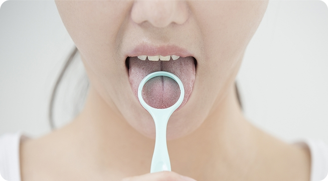

혀클리너로 혀닦기
본래의 건강한 혀는 분홍색 빛깔을 가지고 있지만 분홍빛이 아니거나 혀가 갈라진 모양을 하고 있다면 자기가 전강니 나쁜 건 아닌지 체크해보자.
설태를 긁어내는 하나의 도구
칫솔만으로는 설태를 완벽히 제거할 수 없스비다. 구취가 심한 사함이나 설태가 많은 사람은 물론, 누구나 이를 닦을 때 혀 클리너를 함께 사용하여 혀까지 닦으면 구강 내 세균을 75%끼지 줄일 수 있습니다.
칫솔보다 더 효과적인 이유
혀를 닦을 때 제일 열심히 닦아야 하는 곳이 혀 뿌리인데, 여기를 칫솔로 닦으면 칫솔이 입천장에 닿아 구역질이 잘나기 마련입니다. 하지만 혀 클리너는 입 안 깊숙히 들어가도 입천장에 닿지 않습니다. 다음으로, 혀클리너를 사용하면 설태를 확실하게 제거할 수 있습니다.
혀 닦는 방법
- 혀를 앞으로 내민 다음 혓바닥의 안쪽에 혀클리너를 위치
- 가볍게 눌러서 혓바닥 끝 쪽 방향으로 부드럽게 긁어내리기
- 혀 끝부분(앞쪽)보다는 뿌리(안쪽)를 집중적으로 닦아주기
- 전체적으로 혓바닥을 닦아주는데 너무 세게 긁지 않기
- 사용하고 난 다음에는 물로 깨끗하게 세척해서 보관하기